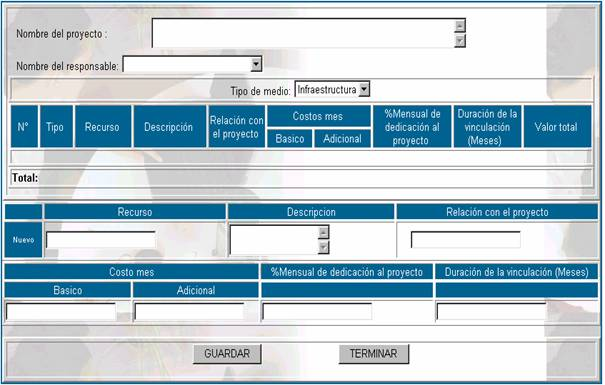

ANÁLISIS DE FACTIBILIDAD
Como se vió
anteriormente para realizar la aprobación de cualquier actividad de un
proyecto, se debe estimar un costo, para determinar si la actividad es factible
económicamente o no, la opción de Análisis de Factibilidad presenta la
siguiente pantalla.
No de Form; especifica el número de análisis de factibilidad
económica que se realizó, este número es correlativo y no depende del usuario.
Nombre del proyecto; especifica el nombre del proyecto del cual se
realizó el análisis de factibilidad económica.
Nombre del responsable; especifica el nombre del responsable de llevar a
cabo el análisis de factibilidad económica.
Total; Este dato especifica el total en Bs. que se invertirá en el proyecto.
Nuevo formulario; Esta opción permite ingresar los datos del proyecto
en términos de recursos, como se muestra en la siguiente pantalla:

Nombre del proyecto; en este campo se especifica el nombre del proyecto
del cual se está realizando el análisis de factibilidad.
Nombre del responsable; en este campo se especifica el nombre del
responsable de realizar dicho análisis.
Tipo de medio; en este campo se especifica el tipo de medio que
requerirá el proyecto, este puede ser
Recurso; en este campo se especifica el nombre del recurso el
cual es requerido por el proyecto, por supuesto que este dato debe ir en
concordancia con el tipo de medio que se registró.
Descripción; en
este campo se anota una descripción completa del recurso que se necesite
adquirir.
Relación con el proyecto; en este campo se especifica la relación que tiene
dicho recurso con el proyecto, para determinar el grado de requerimiento que se
tiene de este recurso.
Costo básico (mes); en este campo se anota el costo en Bs. del recurso
por un mes de utilización, que se planifica, por ejemplo puede ser el costo de
adquisición de un recurso.
Costo adicional (mes); en este campo se anota el costo en Bs. del recurso
por un mes de utilización, que no se planifica, es decir por ejemplo en caso de
adquirir equipos de computación se tiene un costo adicional de reparaciones no
previsto.
% Mensual de dedicación al
proyecto; se refiere al grado de
utilización del recurso por el proyecto gracias al cual se lo adquirió.
Duración de la vinculación
(meses); se refiere al número de meses el proyecto utilizará
el recurso que se adquiera y se deberá registrar en meses.
Valor total; este campo no es modificable por el usuario, debido
a que se calcula con la siguiente fórmula:
Valor
total = (Costo básico + Costo adicional) x Duración de la vinculación
Es necesario aclarar que este es el valor
total del recurso.
Total; tampoco
depende del usuario y se obtiene con la siguiente formula
Donde:
i= Número de recurso
n= Número total de recursos del proyecto
Imprimir; esta opción permite al usuario ver un reporte
completo de todos los recursos que se necesitan para realizar un proyecto.